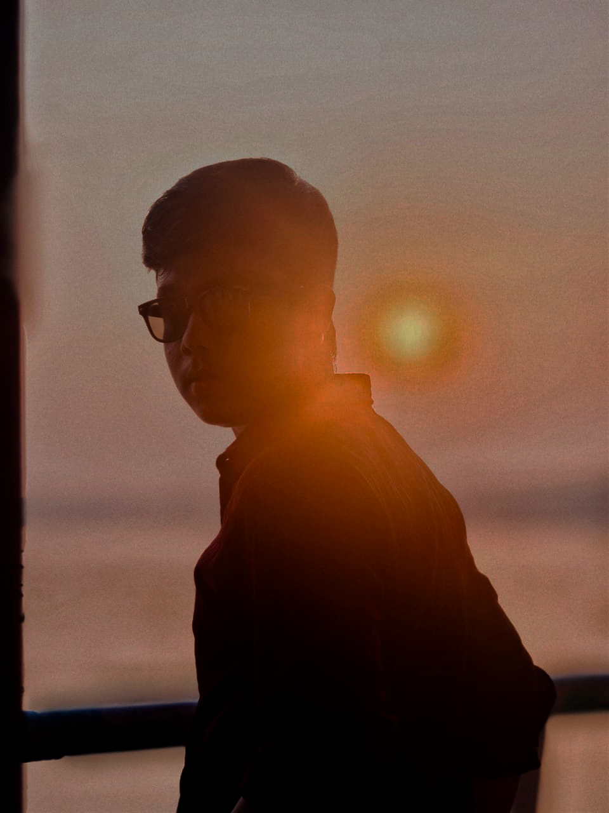

Based in Bangladesh
Every place has a story.
A travel freak with a curious mind, a love for new destinations, and a passion for collecting unforgettable moments.
Explore my journey
Curiosity makes the journey worthwhile.
I’m Towsif — a travel freak who feels most alive when discovering somewhere new. From peaceful riversides to lively cities and the open sea, I love exploring different places, meeting new people, experiencing local culture, and collecting stories along the way.
For me, travelling is more than visiting a destination. It is about the journey, the unexpected moments, the people I meet, and the memories I bring back. There are always more roads to take and more stories waiting to be discovered.
Learning today, exploring tomorrow.
Currently studying
Government Bengali School
Class 10 · School education
A map of memories.
Every destination adds a new chapter. Here are some of the places in my travel collection.
- Cox’s BazarCoastal journey
Sea, horizon, and the feeling of getting away.
- ChattogramCity & culture
A destination in the travel collection.
- BarishalRiver & heritage
A destination in the travel collection.
The journey continues
- Cumilla
- Narsingdi
- Chandpur
- Bhola
- Noakhali
- Brahmanbaria
- Manikganj
- Bikrampur
Let’s connect and explore.
Have a story to share or a place to recommend? Feel free to connect.
invincibletowsif@gmail.com